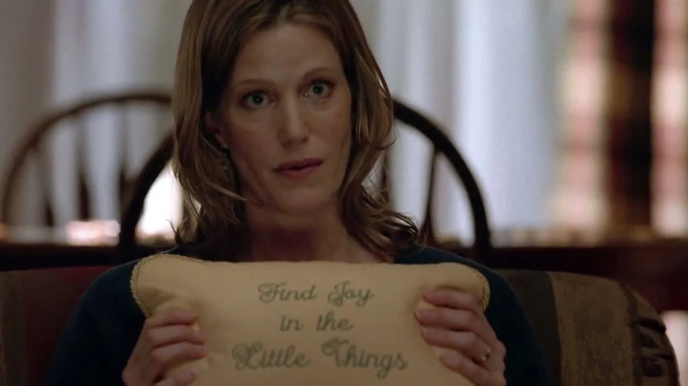
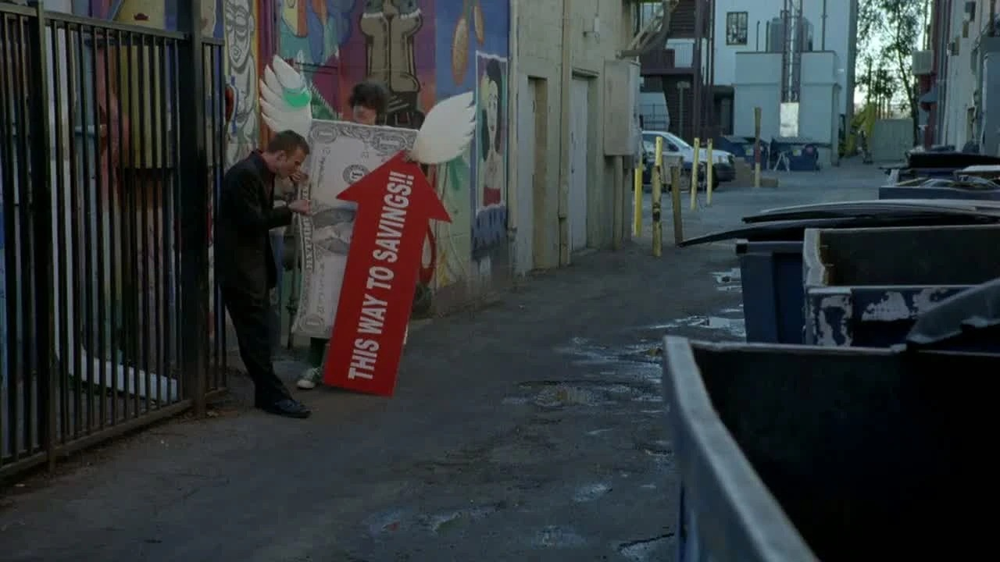
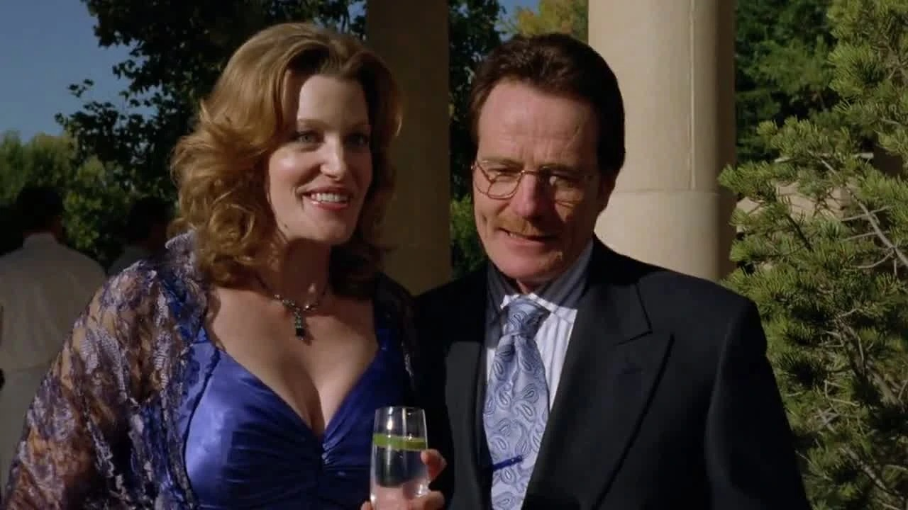
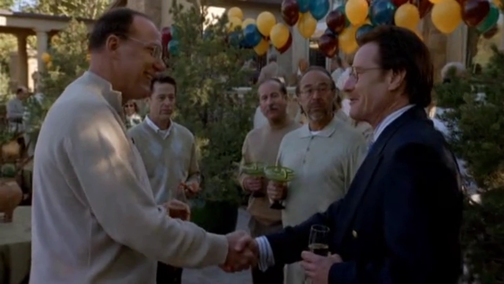
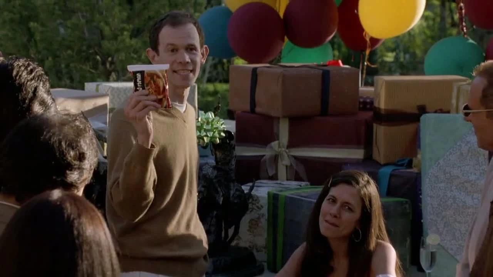
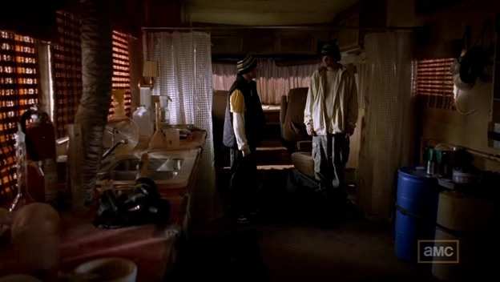
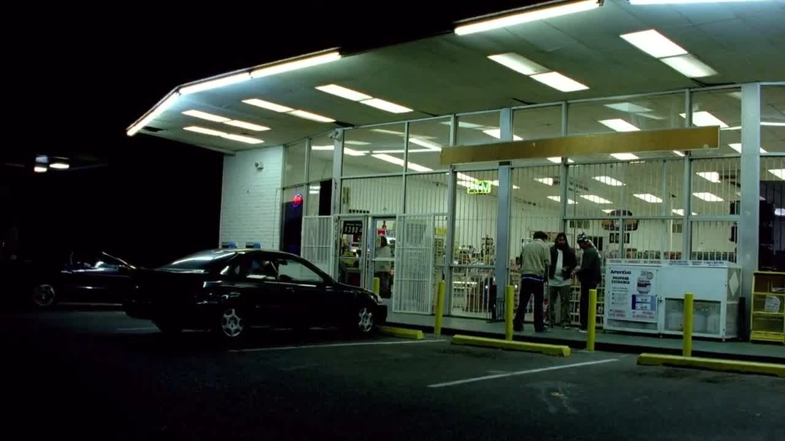
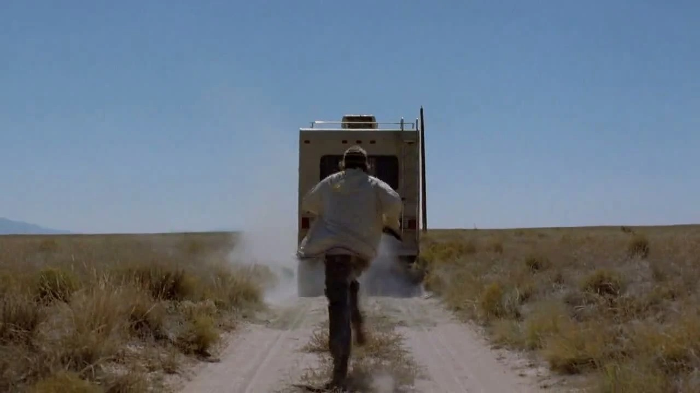
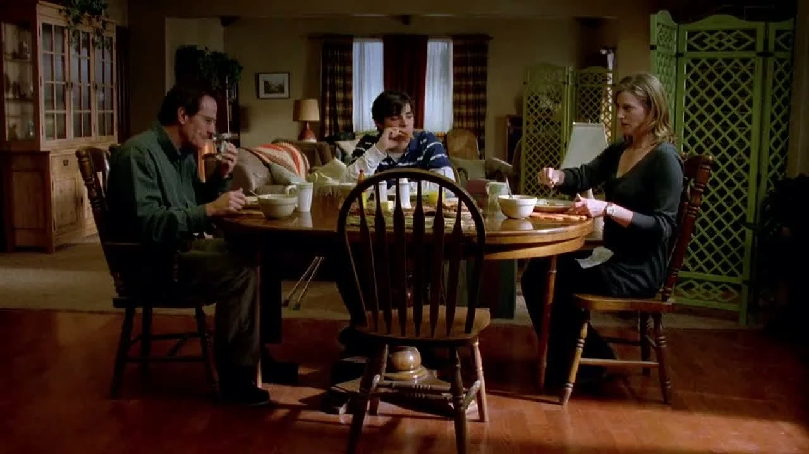
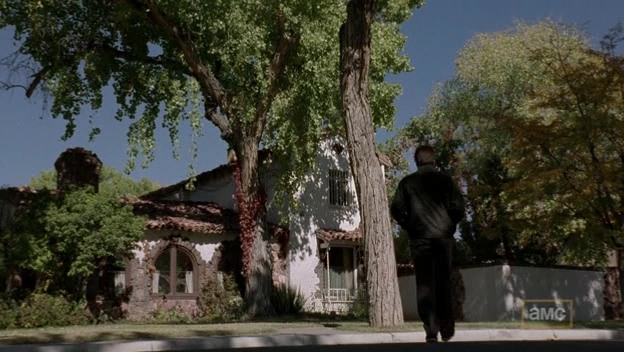

01
地产公司 → 街边
简历准备好了，入口却比想象窄。
剧情事实杰西带着简历应聘，以为自己在争取销售岗位，后来发现实际工作是街边举广告牌，并遇见做这份工作的巴杰。 [1][2]
这一场为什么重要 · 个人解读
他想改变职业身份，却没有掌握新行业的入口条件。巴杰的出现把正常收入和犯罪渠道放到同一个人身上。这里可以看见转向合法工作的困难，也必须保留随后选择的主动性，不能把受挫自动写成只有犯罪一条路。
因此 →巴杰提出合作，另一个证明自己的途径重新出现。

有人愿意帮他，
他为何还是走回那扇门？
一包方便面，一只发言抱枕，一条已经出现的退路。
疾病给他压力，选择开始显出另一种重量。
剧透边界 剧透截至 S01E05，包含本集结尾
12 个剧情节点 · 9 位人物 · 04 组冲突第五集让一条不必制毒的道路明确出现：埃利奥特提供工作与保险，夫妇也愿意负担治疗费用。沃尔特仍然拒绝。与此同时，家人认真争论他能否自己决定治疗，杰西则在新搭档面前复制旧老师的姿态。自主、尊严与被认可的需要，一起把人物推到必须具体选择的地方。
读这一集，跟住三条线援助与尊严 / 自主与关心 / 标准与支配

剧情事实杰西参加求职面试，误以为在应聘销售工作；实际岗位是街边举牌。他随后遇见正在做这份工作的巴杰。 [2]
个人解读开场把合法谋生的入口摆到眼前，也保留了进入它所需的条件。与稍后沃尔特收到的工作邀请对照，两人想获得的位置很不同，却都不愿继续被原来的标签定义。
本页只使用截至 S01E05 已揭示的信息；下文包含本集结尾。
按本集事件推进分为三幕；家庭会议集中呈现多方立场，不用后续旧史解释此刻的援助和拒绝。
过去的能力，仍被人记得。
剧情事实杰西带着简历应聘，以为自己在争取销售岗位，后来发现实际工作是街边举广告牌，并遇见做这份工作的巴杰。 [1][2]
他想改变职业身份，却没有掌握新行业的入口条件。巴杰的出现把正常收入和犯罪渠道放到同一个人身上。这里可以看见转向合法工作的困难，也必须保留随后选择的主动性，不能把受挫自动写成只有犯罪一条路。
因此 →巴杰提出合作，另一个证明自己的途径重新出现。

剧情事实沃尔特与斯凯勒参加埃利奥特的生日宴。宽敞住所、宾客衣着和昂贵礼物，使两人显得格外拘谨。 [1][2]
空间在他们开口前就展示了生活差距。斯凯勒用玩笑处理不自在，沃尔特则对自己带来的礼物先失去信心。受辱感很强，但画面里的不自在与主人的实际恶意不是同一项证据。
因此 →接下来的谈话既触痛差距，也确认他曾有的能力。

剧情事实旧识称赞沃尔特当年的研究才能，谈到灰质名称的由来。听说他转向教育，对方自然追问在哪所大学。 [1][2]
赞美并非缺席，问题恰恰在于赞美与现状落差过大。他曾被视为可以取得很高成就的人，如今却很难向同一群人说明自己的生活。旧识的默认期待，让他对未实现人生的感受更清楚。
因此 →他开始更敏感地理解接下来出现的帮助。

剧情事实沃尔特送出过去共同研究时常吃的方便面，埃利奥特在宾客面前解释这段记忆，并真心表示喜欢。 [1][2]
昂贵礼物并没有完全压过朴素的共同过去。这一反应给了观众反方向的证据：旧友仍可能珍视沃尔特。若直接把整个聚会写成富人羞辱穷人，就会漏掉这份具体的认可，也会削弱后来拒绝帮助的选择分量。
因此 →在回忆拉近距离后，工作邀请显得真实可行。
求职与生日宴并排摆出两种重获位置的机会。财富差距真实，沃尔特的旧日价值也没有像他以为的那样完全被遗忘。
机会来到，也可能先被感成羞辱。
剧情事实埃利奥特邀请沃尔特到灰质工作，称赞他的能力，并提到公司的保险很好。沃尔特由此意识到对方知道癌症。 [1][2]
工作本来可以同时带来收入、治疗保障和专业位置，病情一旦被点明，他却首先把邀请理解成照顾。这里发生的是解释的转向：相同提议，因为触碰自尊，被他从机会改写成施舍。
因此 →他转而追问妻子，是不是她把消息告诉了旧友。
剧情事实斯凯勒承认谈话中告诉了埃利奥特病情。沃尔特为她透露私人情况而愤怒，并拒绝对方工作与支付治疗费的提议。 [1][2]
他要求对病情保有决定权，这并非完全没有根据；但他也把妻子几乎无法承受的压力与求助需要排除在外。关心该如何获得同意，援助为何被视为矮人一等，两道问题在这里纠缠。
因此 →拒绝让资金问题重新落回他们自己身上。

剧情事实杰西与巴杰合作，向他介绍器材并纠正名称；巴杰表示佩服，两人开始尝试制作。 [1][2]
杰西曾反感老师的训斥，现在却借同一套术语建立自己的权威。他不仅想挣钱，也想成为知道该怎么做的人。模仿专业姿态与真正掌握工艺的距离，马上会被成品显露出来。
因此 →第一次成果不能满足他从沃尔特那里学来的标准。

剧情事实小沃尔特与朋友想请人代买啤酒，碰上警察。他求助汉克，被带回家；汉克提醒他该想到父亲的感受。 [1][2]
少年有自己的社交与冒险，不只是等待父亲安排的家属。这次求助也让家庭中的位置出现偏移：汉克成了可以依靠的成年人。对沃尔特的自尊而言，日常里另一个人“接得住”，可能与疾病的无力感相互叠加。
因此 →家人随后试图用一次正式谈话重新接住彼此。
沃尔特拒绝旧友的援手，杰西则试图靠旧老师教过的知识成为权威。家庭角色的错位又加重了两人的焦虑。
治疗、援助和犯罪，是三个需要分开判断的问题。

剧情事实杰西不满意成品的混浊，反复倒掉重做。巴杰因投入被浪费而愤怒，两人争斗，杰西把他留在荒地后开车离开。 [1][2]
杰西第一次如此坚定地维护质量标准，说明老师已经改变了他的自我要求。可标准也变成了对搭档单方面的命令。想做好与会合作并不是同一件事；他复制出的专业骄傲，同样带上了不愿解释的支配。
因此 →离开巴杰后，他仍没有找到稳定、可持续的退路。
剧情事实斯凯勒用抱枕规定发言顺序。小沃尔特要求父亲不要放弃，玛丽主张由本人选择，汉克也改变部分立场；沃尔特表达对副作用与生活质量的担忧。 [1][2]
会议的困难来自大家并非不爱彼此。斯凯勒想活下去，小沃尔特怕被放弃，玛丽坚持选择权，沃尔特怕最后的日子被治疗占据。让这些话真正被听见，比让所有人轮流拿到抱枕更难。
因此 →沃尔特把自主权说清，却还要决定怎样使用它。

剧情事实第二天沃尔特同意治疗。格蕾琴来电再次劝他接受经济援助，他却谎称保险已经解决费用，让妻子继续相信钱会由旧友提供。 [1][2]
这是本集必须拆开的三个动作：他选择治疗，拒绝可以得到的援助，再编出解决资金的假消息。把它们合写成“被迫挣钱”，会抹掉另一条已经摆在眼前的道路。自主权是真问题，资金选择也是真选择。
因此 →他没有向两边说同一套真相，而准备自己筹钱。

剧情事实沃尔特来到杰西家，问他是否愿意再次制作毒品。本集在这句邀请上结束。 [1][2]
首集的诊断让越界显得紧迫，第五集则具体提供了一条不必制毒的资金道路。他仍回到杰西门前，使欲望与自尊的作用变得更难回避。环境没有消失，但“别无选择”已经不能完整描述他的行动。
因此 →本集止于重新合作的邀请；新的后果留给之后。
家庭会议让自主权与亲人的恐惧真正相碰。沃尔特同意治疗，却仍拒绝明明可得的资金，再次走向制毒。
九位人物展示三条线：灰质的援助、家庭的选择权，以及杰西与巴杰的模仿性合作。连线为本集联系，阶段说明列出六组主要变化。
杰西尝试求职，沃尔特在旧友宴会上同时遇到财富差距与真实认可。

病人 / 旧日研究伙伴
保有决定权，并让挣钱的方式仍能维持自己的分量。
埃利奥特提供的工作与医疗援助、技术能力，以及选择接受或拒绝的权力。
拒绝工作和支付治疗费的帮助，表达对生活质量的担心，随后同意治疗并重新找杰西制毒。
这集让另一条可行道路具体出现。对疾病的自主选择值得认真听，对援助的拒绝也必须与犯罪资金的主动选择分开判断。
被旧识认出能力，也被财富差距刺痛。
援助、自主权、师生模仿与重新合作四个角度，分别判断困境、感受和具体行动。
方便面被珍视、专业能力被记得、工作邀请具体出现。把这些事实放在一起看，不能直接推出埃利奥特只是想羞辱他。沃尔特的受辱感是一种真实感受，却不是对方意图的证明。
这使后面的选择更加有分量。他面对的已不是只有治病需求和犯罪能力两项资源，而是有另一种可行的支持。他依旧拒绝，说明资金问题正在与“必须由我来提供”的自我要求绑在一起。
剧透边界：不解释本集尚未讲清的离开灰质原因，也不采用后续对旧史的说法。
把短句放回发生的场景。对白不是人物全部动机的证明，也可能是他选择让别人听见的那一部分。
What I want, what I need, is a choice.我想要的、需要的，是一个选择。中文自译
家庭会议中，他终于拿到发言的抱枕，说明自己的感受。
这是需要认真对待的自主诉求。接下来仍要看，他用这个选择权做了什么，以及是否把别人的知情权也放在眼里。
英文据本集对白转录核对，共 15 个词；中文为本页自译。图片用于提示人物与场景，具体镜头边界见图注。
物件、空间和声音怎样让人物的变化变得可见。以下为画面观察与个人解读。
杰西的简历与沃尔特的工作邀请构成对照。个人解读：两人都想证明有用，却分别遇见入口条件与自尊障碍。
回到相关场景 ↗埃利奥特对朴素礼物的反应提供了真实认可。个人解读：这一证据使“所有帮助都是羞辱”的解释不再足够。
回到相关场景 ↗宾客追问教育工作在哪所大学。个人解读：无意的期待使沃尔特感到生活落差，不需要宾客明确嘲笑才会刺痛。
回到相关场景 ↗拥有发言工具不等于他人准备接受不同结论。个人解读：会议的形式与真实分歧之间，正好暴露关心里的控制。
回到相关场景 ↗杰西向巴杰介绍工具时，旧老师的口吻再次出现。个人解读：知识和权威感一起被学走，合作中的缺点也可能一起传递。
回到相关场景 ↗结尾没有用一段长独白宣布变化，只让沃尔特走回同一个地方。个人解读：重复的动作，因为已经有过援助选项而获得新的分量。
回到相关场景 ↗第五集把角色的解释与行动放到一起检验。病人要求对身体和最后时间作决定，值得被认真听见；他拒绝现实援助、用假消息处理两边关系，也同样值得被看清。
最有力的变化并不是突然出现了更坏的宣言，而是“想再做一批吗”这句重复的话，如今已经发生在另一条路确实存在之后。
回到再次敲门的那一刻 ↗剧透截至第一季第5集，包含本集结尾。不涉及后续集数或其他作品的揭示。 · 本篇止于此，不预告后续情节。